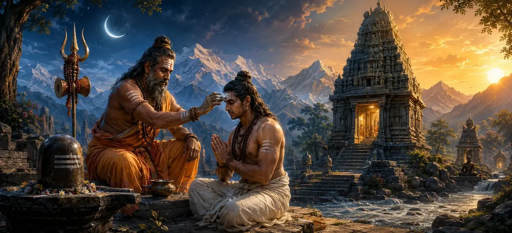

Rules Governing the Pashupata Vrata
The thirty-third chapter of the Vayaviya Samhita details the sacred vows, disciplines, and precise rules governing the supreme Pashupata Vrata.
Sage Vayu explains the highest spiritual practices and ritual observances required to successfully undertake this ultimate vow dedicated to Lord Shiva.
This chapter serves as the definitive manual for aspirants seeking spiritual perfection through the Pashupata tradition.
Chapter 33 Highlights
Supreme Vow
Unveils the profound greatness and spiritual efficacy of the Pashupata Vrata.
Sacred Disciplines
Outlines strict codes of conduct, purity, and mental control for the devotee.
Ritual Observances
Details the application of sacred ash and meditative routines during the vow.
Purifying Power
Explains how this vow completely destroys karma and grants liberation.
Absolute Devotion
Fosters unwavering surrender and supreme love for Lord Shiva.
Narrative Flow
Leads smoothly into Chapter 34 covering The Penance of Upamanyu.
Core Topics in This Chapter
The Supreme Majesty of the Pashupata Vrata
Sage Vayu proclaims that among all spiritual observances, the Pashupata Vrata stands supreme as the ultimate destroyer of worldly bondage.
It is practiced by great sages and perfected souls to attain direct communion with Lord Shiva.
Initiation and Eligibility of the Aspirant
The text outlines the qualifications required for an aspirant entering this sacred path, emphasizing deep devotion and surrender.
Proper guidance from a qualified spiritual preceptor is essential for undertaking the vow.
Rules of Conduct and Strict Purity
Strict adherence to moral integrity, truthfulness, celibacy, and mental discipline forms the backbone of the Vrata.
The seeker must remain detached from worldly pleasures and centered entirely upon Lord Shiva.
Smearing Sacred Ash and Mantra Japa
Observances include bathing in sacred ash (Bhasma), wearing rudraksha, and continuous chanting of the holy Panchakshara mantra.
These ritual actions purify the physical and subtle bodies of the practitioner.
Destruction of Karma and Attaining Grace
Sage Vayu explains that sincere performance of the Pashupata Vrata burns up accumulated karma and dissolves ego.
It culminates in the descent of divine grace and eternal liberation.
Conclusion of the Vrata Rules
Chapter 33 concludes with high praise for the Pashupata Vrata as the supreme spiritual science of liberation.
The sages absorb these profound rules with deep reverence and joy.
Transition to Chapter 34
Following these rules of the Pashupata Vrata, Rishi Vayu prepares to narrate Chapter 34, 'The Penance of Upamanyu'.
The next chapter illustrates the practical application and glorious outcome of supreme penance through the life of Sage Upamanyu.
Key Teachings of Chapter 33
Ultimate Vow
The Pashupata Vrata is the highest path to destroy worldly bondage.
Strict Discipline
Requires absolute purity of body, speech, and mind.
Sacred Ash & Japa
Bhasma and mantra practice cleanse subtle impurities.
Karma Destruction
Burns away past karmas and egoistic limitations.
Divine Grace
Grants direct communion and eternal union with Lord Shiva.
Next Narrative
Leads into the inspiring penance of Upamanyu in Chapter 34.
Spiritual Reflection
The Pashupata Vrata is not merely an external ritual, but the total inner surrender of the individual ego into the supreme fire of Lord Shiva's divine consciousness.
Living the Message of Chapter 33
Approach your spiritual practices with utmost dedication, discipline, and purity.
Wear sacred symbols with mindfulness of your inner divine identity.
Surrender all egoistic desires at the feet of Lord Shiva for ultimate freedom.
Key Spiritual Concepts
The rules and procedures of the Pashupata Vrata.
Ritual cleansing using sacred ash.
Continuous chanting of the five-syllable mantra.
The burning away of accumulated karma.
Destruction of animalistic instinct and bondage.
The prelude to the penance of Upamanyu in Chapter 34.
Chapter Summary
Vayaviya Samhita Chapter 33 presents Rules Governing the Pashupata Vrata. Detailing the supreme majesty, initiation rules, strict purity, sacred ash observances, and karma destruction of this ultimate vow, this chapter provides profound guidance for advanced seekers. It paves the way for Chapter 34, 'The Penance of Upamanyu'.
Frequently Asked Questions
1. What is the primary subject of Vayaviya Samhita Chapter 33?
Chapter 33 details the rules and observances governing the supreme Pashupata Vrata dedicated to Lord Shiva.
2. What is the significance of the Pashupata Vrata in the Shiva Purana?
The Pashupata Vrata is regarded as the highest spiritual vow that destroys all sins and grants direct union with Lord Shiva.
3. Who expounds these sacred rules in the Vayaviya Samhita?
Sage Vayu expounds the intricate rules and disciplines of the Pashupata Vrata to the attentive sages.
4. What core practices are involved in observing the Pashupata Vrata?
It involves strict mental purity, smearing sacred ash, constant mantra japa, and supreme devotion to Lord Shiva.
5. What is the next chapter for navigation after Chapter 33?
The next chapter for navigation is titled 'The Penance of Upamanyu'.
“Through the sacred discipline of the Pashupata Vrata, the seeker dissolves all illusion and merges into the eternal light of Lord Shiva.”
Continue Through Vayaviya Samhita
Chapter 33 concludes Rules Governing the Pashupata Vrata. Continue to The Penance of Upamanyu.